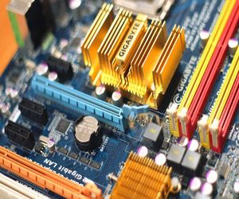
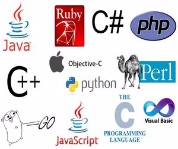

Ana Sayfa
Faydalı Bilgiler
Hakkımda
İletişim
TEKNOLOJİ-YAZILIM

Bilgisayarın Donanım Parçaları
Bilgisayardaki donanım parçaları Anakart,Monitör...

En Popüler 7 Programlama Dilleri
popüler diller,python,javascript...
Yazılıma Başlayacaklar İçin Tavsiyeler
yazılıma başlayacaklar için tavsiyeler...
Bilgisayar Satın Alırken Dikkat Edilmesi Gerekilen Şeylerr
bilgisayar satın alırken nelere dikkat edilmeli?Dikkat edilmesi gerekilen şunlardır...
Bilgisayar Mühendisliği Mi Yazılım Mühendisliği Mi Seçmeliyim?
bilgisayar mı daha iyi yazılım mühendisliği mi cevabımız şudur...
Cep Telefonu Alırken Dikkat Edilmesi Gerekilen Hususlar
telefon alırken şunlara dikkat edilmelidir;
Dinamik Ve Statik Web Site Nedir?
dinamik ve statik web site şunlardır...
SEO Skoru Nasıl Yükseltilir 2021
SEO'nuzu şu yöntemler ile artırabilirsiniz...
Freelancer Nedir Ve Nasıl Olunur?
Freelancer nedir ve nasıl olunur işte detaylar...